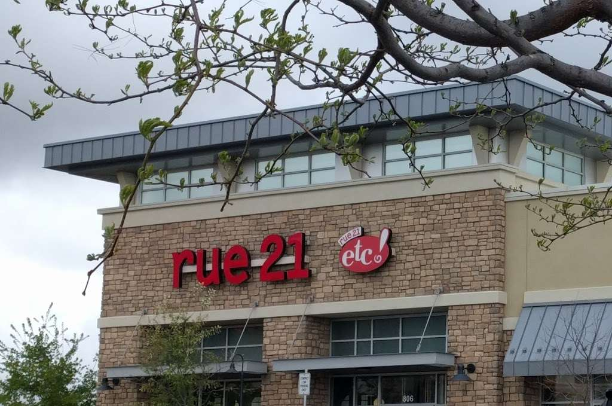
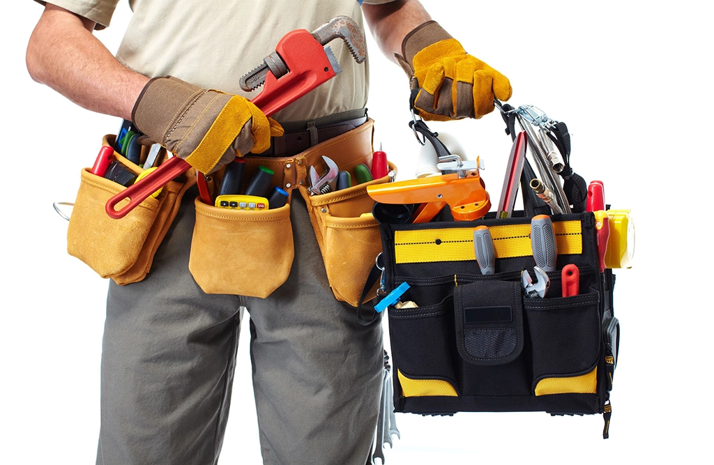

Previous Work
Customer Service
I've worked in various jobs that deal with customer Service from working in a clothing store to working in a ranch and home supply store.

Rue21 | Clothing Associate | April 2018 - June 2019
Responsibilities Included
- Folding clothes
- Paying attention to detail
- Interscting with customers
- Maintaining proper communication with others

Murdoch's Ranch and Home Supply | Associate | June 2019 - May 2021
- Having knowledge about cattle and livestock
- Communicating with customers to find their needs
- Stocking, organzing and maintaining a well functioning store
- Theft prevention
- Reaching for things on the top shelf

Eletrician
Delaney's Electric | Electrical Apprentice | August 2021 - February 2022
While being an Eletrician for some time was enjoyable and helped to teach me a lot. It wasn't what I wanted to do for the rest of my life. The ideal job for me was something that allowed me to be creative, love life and not make me sick of doing it everyday.
- Roughing in houses
- Pulling wire and making up receptical outlets, lights and fixtures
- Trimming houses, installing outlets, and wiring

Maintenance
Comfort Inn and Suites | Handyman/Maintenance | April 2022 - Present
- Patching drywall, painting walls, using ink markers on wood
- Fixing clogged or backed up plumbing
- Electrical, swapping outlets, fixing lights
- Pool maintenance
While this was an easy job it was also the point in my life where I asked myself what I was doing with my life. I had jumped from job to job and saw my life going down the drain. I knew it was time for change.
It was during this point that I decided to make a change and pursue a new career and this time I was not going to give up.